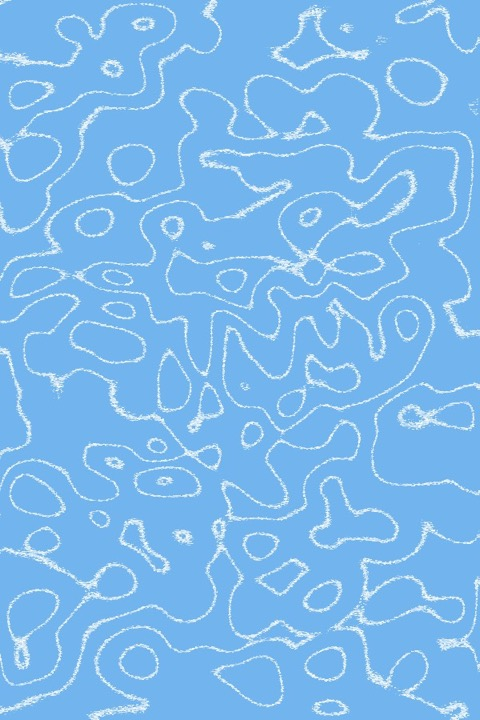
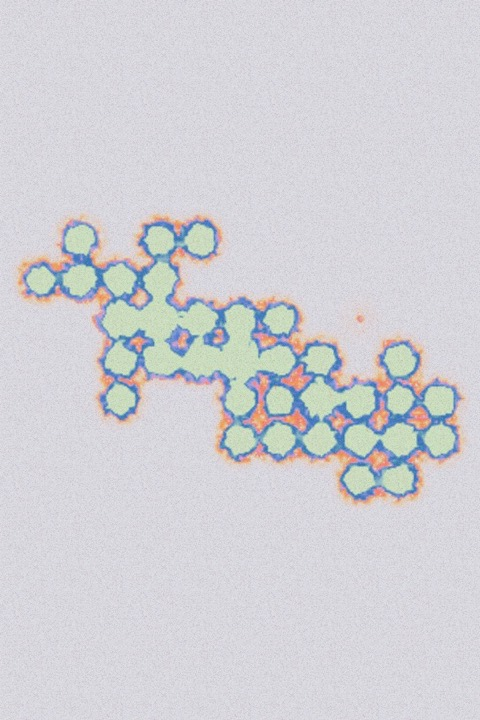

<!doctype html>
<html lang="en">
<head>
<meta charset="utf-8">
<title>clack · store pictures</title>
<link rel="stylesheet" href="https://fonts.googleapis.com/css2?family=Chivo+Mono:wght@400;500&family=Figtree:wght@800&display=swap">
<link rel="stylesheet" href="https://api.fontshare.com/v2/css?f[]=switzer@400,500,600&display=swap">
<style>
/* The pictures for clack's Chrome Web Store listing, which shots.py renders from this page: ?shot=1 to 3 are the
   1280×800 screenshots, each a line on the left and a browser on the right with clack in its side panel beside a chat,
   ?shot=tile is the 440×280 promo tile, and ?shot=og the website's 1200×630 link preview. clack in the panel is the real one (the repo's index.html), told about the
   chat the way the extension's panel tells it, and played by shots.py with the pointer. The chat is only a sketch, as
   on the website's How it works, and the type and colours are the website's */
:root {
  --bg-2: #f2f2f2; --ink: #0a0a0a; --ink-2: #525252; --ink-3: #8a8a8a; --line: #e3e3e3; --accent: #2c62fb;
  --font-ui: "Switzer", system-ui, -apple-system, sans-serif;
  --font-mono: "Chivo Mono", ui-monospace, monospace;
  --font-brand: "Figtree", system-ui, -apple-system, sans-serif;
}
* { box-sizing: border-box; }
html, body { margin: 0; overflow: hidden; }
body { width: 1280px; height: 800px; background: var(--bg-2); color: var(--ink); font: 400 16px/1.5 var(--font-ui); -webkit-font-smoothing: antialiased; }

/* the line: mono capitals after a cobalt square, then the big line and what it means */
.copy { position: absolute; left: 72px; top: 0; bottom: 0; width: 352px; display: flex; flex-direction: column; justify-content: center; }
.lab { display: inline-flex; align-items: center; gap: 12px; font: 500 14px/1.2 var(--font-mono); text-transform: uppercase; }
.lab::before { content: ""; width: 9px; height: 9px; background: var(--accent); }
h1 { margin: 26px 0 20px; font: 500 52px/1.03 var(--font-ui); letter-spacing: -.045em; text-wrap: balance; }
.copy p { margin: 0; font-size: 19px; line-height: 1.5; color: var(--ink-2); text-wrap: pretty; }

/* the browser: three dots and the chat's tab, the address with clack's ring pinned after the puzzle piece, then the
   chat and clack's side panel */
.win { position: absolute; left: 472px; top: 40px; width: 768px; height: 720px; display: flex; flex-direction: column; overflow: hidden;
  border-radius: 14px; background: #fff; box-shadow: 0 0 0 1px rgba(0,0,0,.08), 0 8px 32px rgba(0,0,0,.14); }
.br { position: relative; display: flex; align-items: flex-end; height: 42px; padding-left: 84px; background: #e4e4e4; }
.br::before { content: ""; position: absolute; left: 20px; top: 17px; width: 11px; height: 11px; border-radius: 50%; background: #c4c4c4; box-shadow: 18px 0 #c4c4c4, 36px 0 #c4c4c4; }
.br span { height: 32px; padding: 0 22px; border-radius: 9px 9px 0 0; background: #fff; font: 500 13px/32px var(--font-mono); }
.ad { display: flex; align-items: center; gap: 14px; height: 46px; padding: 0 16px; border-bottom: 1px solid var(--line); }
.ad span { flex: 1; padding: 6px 16px; border-radius: 999px; background: var(--bg-2); font: 400 13px/1.2 var(--font-mono); color: var(--ink-3); }
.ad svg { width: 18px; height: 18px; fill: var(--ink-3); }
.ring { flex: none; width: 20px; height: 20px; border-radius: 4px; background: radial-gradient(circle closest-side, #fff 11%, transparent 12% 31%, #fff 32% 46%, transparent 47%) var(--accent); }
.ad .ring { box-shadow: 0 0 0 5px #ebebeb; }
.bd { flex: 1; display: flex; min-height: 0; }

/* the chat: your prompt, the answer in lines of grey, and the box you type in with its send or stop button */
.chat { position: relative; flex: 1; padding: 28px 26px; background: #faf9f5; }
.me { width: fit-content; max-width: 86%; margin: 0 0 24px auto; padding: 9px 14px; border-radius: 12px; background: #efece4; font-size: 14px; line-height: 1.35; }
.ans i { display: block; height: 9px; margin-bottom: 10px; border-radius: 5px; background: #e4e0d6; }
.ans .p { margin-top: 20px; }
.ans .wr { width: 12px; height: 12px; border-radius: 50%; background: var(--ink-2); }
.box { position: absolute; left: 20px; right: 20px; bottom: 20px; height: 64px; padding: 12px 16px; border-radius: 16px; background: #fff;
  box-shadow: 0 0 0 1px #e6e2d8, 0 3px 10px rgba(0,0,0,.05); font-size: 14px; color: var(--ink-3); }
.go { position: absolute; right: 10px; bottom: 10px; display: grid; place-items: center; width: 30px; height: 30px; border-radius: 9px; background: var(--ink); }
.go svg { width: 15px; height: 15px; }
.go.stop::before { content: ""; width: 10px; height: 10px; border-radius: 2px; background: #fff; }
.done .go { background: #d6d3cc; }

/* clack's side panel: its name and the button that closes it, then clack */
.side { display: flex; flex-direction: column; width: 384px; border-left: 1px solid var(--line); }
.sp { display: flex; align-items: center; gap: 9px; height: 40px; padding: 0 14px; border-bottom: 1px solid var(--line); font: 500 15px/1 var(--font-ui); }
.sp .ring { width: 18px; height: 18px; }
.sp svg { width: 15px; height: 15px; margin-left: auto; stroke: var(--ink-3); }
.side iframe { flex: 1; display: block; width: 100%; border: 0; background: #e6e6e6; }

/* the promo tile: clack's ring and name on its cobalt, beside three materials the way the website's ring shows them,
   the middle one big and in its colours, the others smaller and grey */
body.tile { width: 440px; height: 280px; background: var(--accent); }
.tile::before { content: ""; position: absolute; inset: 0; background: radial-gradient(circle, rgba(255,255,255,.2) 1px, transparent 1.5px) 0 0 / 16px 16px; }
.mark { position: absolute; left: 34px; top: 50%; translate: 0 -50%; color: #fff; }
.mark svg { display: block; width: 52px; height: 52px; margin-bottom: 18px; }
.mark b { display: block; font: 800 66px/.9 var(--font-brand); letter-spacing: -.045em; }
.mark span { display: block; margin-top: 14px; font: 500 11px/1.3 var(--font-mono); text-transform: uppercase; opacity: .85; }
.cards img { position: absolute; top: 50%; width: 84px; height: 126px; object-fit: cover; translate: 0 -50%; filter: grayscale(1) brightness(1.08); opacity: .55; }
.cards img:nth-child(1) { left: 228px; }
.cards img:nth-child(3) { left: 340px; }
.cards img:nth-child(2) { left: 264px; z-index: 1; width: 124px; height: 186px; filter: none; opacity: 1; box-shadow: 0 10px 28px rgba(0,0,0,.25); }

/* the link preview: the tile's cobalt, ring and three materials at the size a shared link shows, with the website's
   line under clack's name and where clack lives */
body.og { width: 1200px; height: 630px; }
.og .mark { left: 88px; }
.og .mark svg { width: 92px; height: 92px; margin-bottom: 30px; }
.og .mark b { font-size: 156px; }
.og .mark p { width: 470px; margin: 30px 0 0; font: 500 38px/1.1 var(--font-ui); letter-spacing: -.035em; text-wrap: balance; }
.og .mark span { margin-top: 26px; font-size: 16px; opacity: .8; }
.og .cards img { width: 168px; height: 252px; }
.og .cards img:nth-child(1) { left: 608px; }
.og .cards img:nth-child(3) { left: 1024px; }
.og .cards img:nth-child(2) { left: 792px; width: 240px; height: 360px; box-shadow: 0 20px 56px rgba(0,0,0,.28); }
</style>
</head>
<body>
<script>
// what each picture says and shows; shots.py reads the pointer's path from here (in fractions of clack's panel)
const SHOTS = {
  1: { lab: 'While it writes', h: 'Something to clack while your chat writes.',
    p: 'Open clack in the side panel beside claude.ai or ChatGPT. It wakes up the moment an answer starts.',
    tab: 'claude.ai', sound: 'soap', count: 214, state: 'wait', secs: 9, prompt: 'Find why the build fails on CI',
    path: [[.14, .36], [.5, .44], [.84, .38], [.56, .62], [.24, .68]] },
  2: { lab: 'Ten materials', h: 'Crumple, pop, shave.',
    p: 'Ten materials under your cursor, each with its own sound and picture. No score and no streak, so nothing keeps you there.',
    tab: 'chatgpt.com', sound: 'thock', count: 1093, state: 'wait', secs: 23, prompt: 'Draft the release notes for 2.4',
    path: [[.14, .3], [.42, .46], [.8, .4], [.66, .62], [.3, .68]] },
  3: { lab: 'When it’s done', h: 'It lets go the moment the answer is ready.',
    p: 'The picture fades to grey and the sound stops, even if you keep playing. That’s your cue to go back and read it.',
    tab: 'claude.ai', sound: 'soap', count: 388, state: 'done', secs: 41, prompt: 'Now fix it and run the tests',
    path: [[.2, .4], [.5, .48], [.8, .44]] },
};
const id = new URLSearchParams(location.search).get('shot') || '1';
const PLUS = '<svg viewBox="0 0 24 24"><path d="M20.5 11H19V7a2 2 0 0 0-2-2h-4V3.5a2.5 2.5 0 0 0-5 0V5H4a2 2 0 0 0-2 2v3.8h1.5a2.7 2.7 0 0 1 0 5.4H2V20a2 2 0 0 0 2 2h3.8v-1.5a2.7 2.7 0 0 1 5.4 0V22H17a2 2 0 0 0 2-2v-4h1.5a2.5 2.5 0 0 0 0-5z"/></svg>';
const SEND = '<svg viewBox="0 0 24 24" fill="none" stroke="#fff" stroke-width="2.6" stroke-linecap="round" stroke-linejoin="round"><path d="M12 19V5m-6 6 6-6 6 6"/></svg>';
const RING = '<svg viewBox="0 0 24 24"><circle cx="12" cy="12" r="8.5" fill="none" stroke="currentColor" stroke-width="2.6"/><circle cx="12" cy="12" r="2.2" fill="currentColor"/></svg>';
// the answer as lines of grey, the widths of each paragraph's lines; still being written, it ends on a pulsing dot
const bars = ws => ws.map((w, i) => w ? `<i style="width:${w}%"${ws[i - 1] === 0 ? ' class="p"' : ''}></i>` : '').join('');
let ready = false;

if (id === 'tile' || id === 'og') {
  document.body.className = id === 'og' ? 'tile og' : 'tile';
  const words = id === 'og' ? '<p>Something to clack instead of scrolling.</p><span>Web version · Chrome extension</span>' : '<span>Something to press<br>while it writes</span>';
  document.body.insertAdjacentHTML('beforeend', `<div class="mark">${RING}<b>clack</b>${words}</div>
    <div class="cards"></div>`);
  Promise.all([document.fonts.ready, ...[...document.images].map(im => im.decode())]).then(() => { ready = true; });
} else {
  const s = SHOTS[id];
  const wait = s.state === 'wait';
  document.body.insertAdjacentHTML('beforeend', `
    <div class="copy"><span class="lab">${s.lab}</span><h1>${s.h}</h1><p>${s.p}</p></div>
    <div class="win ${s.state}">
      <div class="br"><span>${s.tab}</span></div>
      <div class="ad"><span>${s.tab}</span>${PLUS}<i class="ring"></i></div>
      <div class="bd">
        <div class="chat"><p class="me">${s.prompt}</p>
          <div class="ans">${wait ? bars([94, 88, 97, 70, 0, 92, 38]) + '<i class="wr"></i>' : bars([94, 88, 97, 70, 0, 92, 84, 46, 0, 90, 58])}</div>
          <div class="box">Reply…<i class="go${wait ? ' stop' : ''}">${wait ? '' : SEND}</i></div></div>
        <div class="side"><div class="sp"><i class="ring"></i>clack<svg viewBox="0 0 24 24" fill="none" stroke-width="2.2" stroke-linecap="round"><path d="M6 6l12 12M18 6 6 18"/></svg></div>
          <iframe id="clack" src="../index.html?agent=panel" title="clack"></iframe></div>
      </div>
    </div>`);
  const frame = document.getElementById('clack');
  // told the way the extension's panel tells it (extension/panel.js): one chat writing, since secs ago
  const tell = (type, extra) => {
    const since = Date.now() - s.secs * 1000;
    frame.contentWindow.postMessage({ clack: { type, at: Date.now(), session: 'tab-1', working: type === 'done' ? 0 : 1, since, prompted: since,
      site: s.tab === 'claude.ai' ? 'claude.ai' : 'ChatGPT', ...extra } }, '*');
  };
  addEventListener('message', m => {
    if (m.source !== frame.contentWindow || !m.data || m.data.clack !== 'ready') return;
    frame.contentWindow.__clack.set({ sound: s.sound, count: s.count });
    tell('hello', { phase: 'wait' });
    document.fonts.ready.then(() => setTimeout(() => { ready = true; }, 1500));
  });
  // for shots.py: where clack's panel is, the path to play it along, and the answer finishing
  window.panel = () => { const r = frame.getBoundingClientRect(); return { x: r.x, y: r.y, w: r.width, h: r.height, path: s.path, done: !wait }; };
  window.finish = () => tell('done', { reason: 'Stop' });
}
window.isReady = () => ready;
</script>
</body>
</html>
